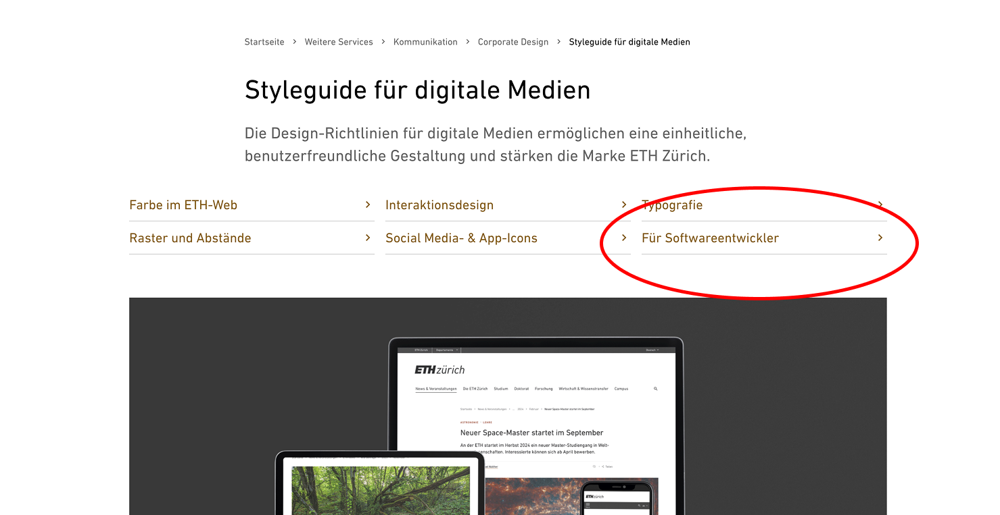

ETH Zürich has established visual guidelines, but lacks a proper developer-friendly design system for application developers. How can we provide technical guidance for implementing ETH styles across diverse platforms, frameworks, and use cases?
What is a Design System?
A design system is a comprehensive collection of interconnected elements that guide the creation of digital products. It includes:
- *Design Principles: Fundamental rules that guide the design process, ensuring consistency and alignment with the brand's vision.
- *Style Guides: Detailed specifications for visual elements like typography, color palettes, and spacing.
- Components: Reusable UI elements such as buttons, forms, and navigation bars, which are designed to be modular and adaptable.
- Patterns: Established ways of using components to solve common design problems, like login flows or search functionality.
- Assets and Tools: Access to design files, code snippets, and software that facilitate the implementation of the design system.
The primary goals of a design system are to:
- Enhance Consistency: Ensure that all products and features have a uniform look and feel.
- Improve Efficiency: Reduce design and development time by providing pre-built components and guidelines.
- Foster Collaboration: Encourage cross-functional teams to work together more effectively by using a shared language and set of tools.
Key Challenges
Unknown Developer Ecosystem
We don't know which frameworks, languages, or platforms ETH developers might be using for their projects:
- Web frameworks (React, Vue, Angular, Svelte, vanilla JS)
- Mobile platforms (iOS, Android, React Native, Flutter)
- Desktop applications
- Research-specific tools and platforms
Unknown Application Types
We have limited insight into what applications are being developed (or at least Nick Niles does):
- Administrative tools
- Research data visualization
- Student-facing applications
- Internal department tools
- Public-facing websites
Developer Experience Expectations
Developers typically want practical, developer-friendly solutions:
- Package manager installation (npm, yarn, pip)
- Command-line tools
- Copy-paste examples
- Visual references
- Minimal documentation to read
The Solution Space
General Proposal
Leverage and extend existing infrastructure instead of creating new dependencies:

- Utilize the established ETH corporate communications website as the foundation
- Add a developer-focused section to existing guidelines with practical implementation details
- Provide lightweight, framework-agnostic resources that don't introduce new technical dependencies
- Create a central repository of design knowledge without requiring developers to adopt new tools
With limited resources at our disposal, we need to decide how comprehensive our design system approach should be. Each option involves a tradeoff between implementation quality and maintenance effort:
A lightweight approach that leverages Figma's design tools:
- Expose design tokens and components through Figma Dev Mode
- Create a page that outlines main tokens with embedded Figma frames
- Provide reference sections for colors, buttons, icons, spacing, form elements, etc.
- Include downloadable JSON token files that developers can import into their projects
- Maintenance effort: Low | Implementation quality: Basic
Pros:
- Designers already use Figma and can implement without developer support
- Minimal setup and maintenance required
- Always up-to-date with the latest design changes
- No additional infrastructure needed
- Immediate implementation possible
Cons:
- Relies on proprietary third-party tool (Figma)
- Unfamiliar to many developers
- Values in Dev Mode may not translate well to developer workflows
- Limited practical implementation guidance
- Requires Figma licenses for full access
A balance between flexibility and structure:
- Develop an ETH-branded Tailwind preset with the correct tokens
- Provide copy-paste UI pattern examples with implementation code
- Create visual reference guides with interactive examples
- Maintenance effort: Medium | Implementation quality: Good
Pros:
- Tailwind is widely adopted and familiar to many web developers
- Copy-paste patterns reduce implementation time
- Framework-agnostic approach works in most web contexts
- Uses industry-standard CSS approaches
- Good balance of flexibility and structure
Cons:
- Requires Tailwind knowledge or willingness to learn
- Not as suitable for non-web platforms
- Requires regular updates to maintain alignment with designs
- May not fit all development stacks
- Utility-first approach might not appeal to all developers
A comprehensive component ecosystem:
- Build a robust component library with framework integrations
- Create Storybook documentation with live examples
- Publish NPM packages for easy integration
- Research developer needs to prioritize components
- Maintenance effort: High | Implementation quality: Excellent
Pros:
- Provides complete, ready-to-use components
- Ensures high-quality, consistent implementations
- Significantly reduces development time
- Creates a unified component ecosystem
- Enables proper versioning and dependency management
Cons:
- Requires significant upfront development resources
- High ongoing maintenance commitment
- May require specialized framework knowledge
- Difficult to support all potential frameworks and use cases
- Can create dependencies that need to be managed long-term
Each approach advances our key design system goals in different ways:
Goals & Tradeoffs
| Option |
Consistency |
Efficiency |
Collaboration |
| Figma Dev Mode |
Basic visual consistency |
Self-service token reference |
Minimal shared language |
| Tailwind Preset |
Good UI pattern alignment |
Copy-paste implementation |
Common pattern language |
| Component Library |
Excellent UI consistency |
Plug-and-play components |
Shared component ecosystem |
Decision Criteria
We must evaluate each approach against these key factors:
- Maintenance cost: How much ongoing effort is required from our team?
- Developer adoption: Will developers actually use it?
- Framework support: How broadly applicable is the solution?
- Implementation quality: How close to the brand vision will results be?
- Technical dependencies: Does it introduce new tools or systems that create additional hurdles?